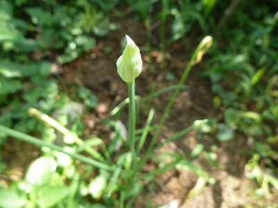
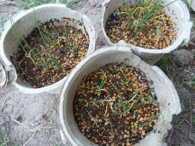
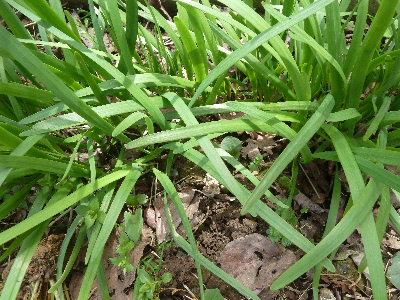
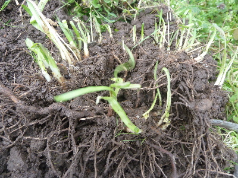
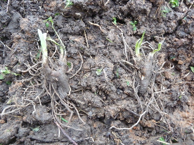

遊びで植物を育てよう
2017/08/26
ニラの蕾が出来ていました。
園芸本によると、花や種に栄養を取られるので切った方がいいそうです。

実際1つ1つ取るのって面倒です。次々出てくるからきりがない。
なので、花芽が出たものからドンドン収獲して食べることにします。
【ニラTOP】
【野菜TOP】
【園芸TOP】
2017/05/20
種からのニラはひょろひょろです。
種まきして芽が出ているんですが、小さいです。

ある程度大きくしてからじゃないと地に植えれないですね。
大きくなるまでに時間がかかりそうだな。
【ニラTOP】
【野菜TOP】
【園芸TOP】
2017/04/08
ニラを収穫しました。
今年株分けしたものじゃなくて、去年から植えてあるものはもう収穫できるようになりました。

これから定期的にニラが食べれます。
【ニラTOP】
【野菜TOP】
【園芸TOP】
2017/03/12
ニラの土寄せをしました。
植え替えしたニラの芽が、土からにょきにょき出て来ました

ネット情報のニラの育て方によると、土寄をするとあったのでやっておきました。
いまのところ順調に育ってる気がします。
【ニラTOP】
【野菜TOP】
【園芸TOP】
2017/02/18
ニラの株分けをしました。
ニラの一塊を掘り起こしたらこんな感じです。

根がぎっちり絡み合ってました。
最初は丁寧に弱い力で少しずつバラそうとしていたんですが、なかなか進まないので力を入れてポキポキ割っていきました。

こんな感じのが10個採れました。
畑に植えて、後は大きく育つまで待つだけかな？
秋までに何回収獲出来るかな。
【ニラTOP】
【野菜TOP】
【園芸TOP】
畑仕事じゃないよ。
【おいしいものを食べよう。】【たくさん寝よう。】
【ソロ活をしよう!】【季節感のあることをしよう。】【動画視聴はほどほどに。】【当サイトの全てのコンテンツは無断転載禁止です。】